The movement of electrons toward the surface of a wire under high-frequency conditions is called the skin effect. At low frequencies, the skin effect does not have a large effect on the conductivity (or resistance) of the wire. However, as the frequency increases, the resistance of the wire may become an influential factor. Table 3.2 shows just how influential skin effect can be as the frequency of the signal increases (the table uses the ratio of ac resistance to dc resistance as a function of frequency).
TABLE 3.2 ac/dc Resistance Ratio as a Function of Frequency
One thing that can be done to reduce the resistance caused by skin effects is to use stranded wire—the combined surface area of all the individual wires within the conductor is greater than the surface area for a solid-core wire of the same diameter.
Weird Behavior in Cables (Lecture on Transmission Lines)
Like wires, cables also exhibit skin effects. In addition, cables exhibit inductive and capacitive effects that result from the existence of magnetic and electrical fields within the cable. A magnetic field produced by the current through one wire will induce a current in another. Likewise, if two wires within a cable have a net difference in charge between them, an electrical field will exist, thus giving rise to a capacitive effect.
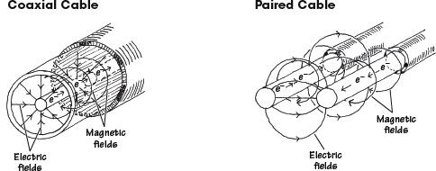
FIGURE 3.9 Illustration of the electrical and magnetic fields within a coaxial and paired cable.
Taking note of both inductive and capacitive effects, it is possible to treat a cable as if it were made from a number of small inductors and capacitors connected together. An equivalent inductor-capacitor network used to model a cable is shown in Fig. 3.10.
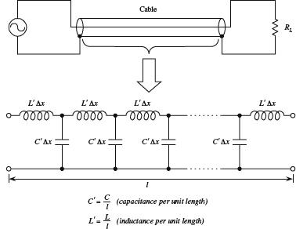
The impedance of a cable can be modeled by treating it as a network of inductors and capacitors.
FIGURE 3.10
To simplify this circuit, we apply a reduction trick; we treat the line as an infinite ladder and then assume that adding one “rung” to the ladder (one inductor-capacitor section to the system) will not change the overall impedance Z of the cable. What this means—mathematically speaking—is we can set up an equation such that Z = Z + (LC section). This equation can then be solved for Z. After that, we find the limit as Δx goes to zero. The mathematical trick and the simplified circuit are shown below.
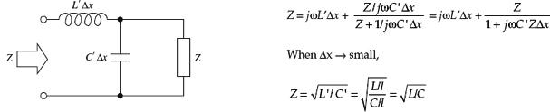
FIGURE 3.11
By convention, the impedance of a cable is called the characteristic impedance (symbolized Z0). Notice that the characteristic impedance Z0 is a real number. This means that the line behaves like a resistor despite the fact that we assumed the cable had only inductance and capacitance built in.
The question remains, however, what are L and C? Well, figuring out what L and C should be depends on the particular geometry of the wires within a cable and on the type of dielectrics used to insulate the wires. You could find L and C by applying some physics principles, but instead, let’s cheat and look at the answers. The following are the expressions for L and C and Z0 for both a coaxial and parallel-wire cable:
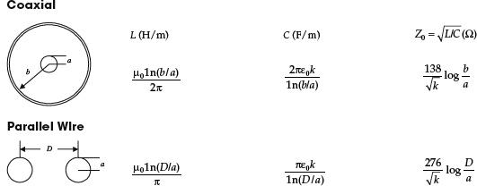
FIGURE 3.12 Inductance, capacitance, and characteristic impedance formulas for coaxial and parallel wires.
Here, k is the dielectric constant of the insulator, μ0 = 1.256 × 10−6 H/m is the permeability of free space, and ε0 = 8.85 × 10−12 F/m is the permitivity of free space. Table 3.3 provides some common dielectric materials with their corresponding constants.
TABLE 3.3 Common Dielectrics and Their Constants
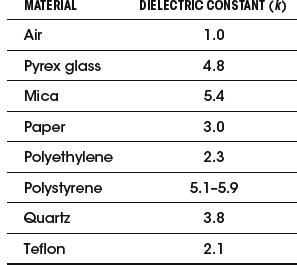
Often, cable manufacturers supply capacitance per foot and inductance per foot values for their cables. In this case, you can simply plug the given manufacturer’s values into 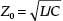 to find the characteristic impedance of the cable. Table 3.4 shows capacitance per foot and inductance per foot values for some common cable types.
TABLE 3.4 Capacitance and Inductance per Foot for Some Common Transmission-Line Types
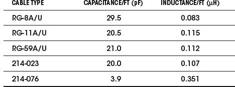
Sample Problems (Finding the Characteristic Impedance of a Cable)
EXAMPLE 1
An RG-11AU cable has a capacitance of 21.0 pF/ft and an inductance of 0.112 μH/ft. What is the characteristic impedance of the cable?
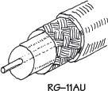
You are given the capacitance and inductance per unit length: C′ = C/ft, L′ = L/ft. Using 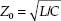 and substituting C and L into it, you get
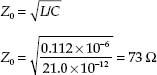
FIGURE 3.13
EXAMPLE 2
What is the characteristic impedance of the RG-58/U coaxial cable with polyethylene dielectric (k = 2.3) shown below?
FIGURE 3.14
Find the characteristic impedance of the parallel-wire cable insulated with polyethylene (k = 2.3) shown below.
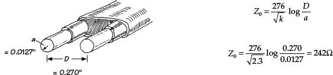
FIGURE 3.15
Impedance Matching
Since a transmission line has impedance built in, the natural question to ask is, How does the impedance affect signals that are relayed through a transmission line from one device to another? The answer to this question ultimately depends on the impedances of the devices to which the transmission line is attached. If the impedance of the transmission line is not the same as the impedance of, say, a load connected to it, the signals propagating through the line will only be partially absorbed by the load. The rest of the signal will be reflected back in the direction it came. Reflected signals are generally bad things in electronics. They represent an inefficient power transfer between two electrical devices. How do you get rid of the reflections? You apply a technique called impedance matching. The goal of impedance matching is to make the impedances of two devices—that are to be joined—equal. The impedance-matching techniques make use of special matching networks that are inserted between the devices.
Before looking at the specific methods used to match impedances, let’s first take a look at an analogy that should shed some light on why unmatched impedances result in reflected signals and inefficient power transfers. In this analogy, pretend that the transmission line is a rope that has a density that is analogous to the transmission line’s characteristic impedance Z0. Pretend also that the load is a rope that has a density that is analogous to the load’s impedance ZL. The rest of the analogy is carried out below.
Unmatched Impedances (Z0 < ZL)
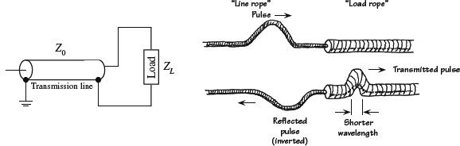
FIGURE 3.16a
A low-impedance transmission line that is connected to a high-impedance load is analogous to a low-density rope connected to a high-density rope. In the rope analogy, if you impart a pulse at the left end of the low-density rope (analogous to sending an electrical signal through a line to a load), the pulse will travel along without problems until it reaches the high-density rope (load). According to the laws of physics, when the wave reaches the high-density rope, it will do two things. First, it will induce a smaller-wavelength pulse within the high-density rope, and second, it will induce a similar-wavelength but inverted and diminished pulse that rebounds back toward the left end of the low-density rope. From the analogy, notice that only part of the signal energy from the low-density rope is transmitted to the high-density rope. From this analogy, you can infer that in the electrical case similar effects will occur—only now you are dealing with voltage and currents and transmission lines and loads.
Unmatched Impedances (Z0 > ZL)
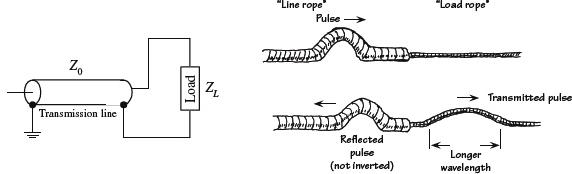
FIGURE 3.16b
A high-impedance transmission line that is connected to a low-impedance load is analogous to a high-density rope connected to a low-density rope. If you impart a pulse at the left end of the high-density rope (analogous to sending an electrical signal through a line to a load), the pulse will travel along the rope without problems until it reaches the low-density rope (load). At that time, the pulse will induce a longer-wavelength pulse within the low-density rope and will induce a similar-wavelength but inverted and diminished pulse that rebounds back toward the left end of the high-density rope. From this analogy, again you can see that only part of the signal energy from the high-density rope is transmitted to the low-density rope.
Matched Impedances (Z0 = ZL)
FIGURE 3.16c
Connecting a transmission line and load of equal impedances together is analogous to connecting two ropes of similar densities together. When you impart a pulse in the “transmission line” rope, the pulse will travel along without problems. However, unlike the first two analogies, when the pulse meets the load rope, it will continue on through the load rope. In the process, there will be no reflection, wavelength change, or amplitude change. From this analogy, you can infer that if the impedance of a transmission line matches the impedance of the load, power transfer will be smooth and efficient.
Standing Waves
Let’s now consider what happens to an improperly matched line and load when the signal source is producing a continuous series of sine waves. You can, of course, expect reflections as before, but you also will notice that a superimposed standing-wave pattern is created within the line. The standing-wave pattern results from the interaction of forward-going and reflected signals. Figure 3.17 shows a typical resulting standing-wave pattern for an improperly matched transmission line attached between a sinusoidal transmitter and a load. The standing-wave pattern is graphed in terms of amplitude (expressed in terms of Vrms) versus position along the transmission line.
FIGURE 3.17 Standing waves on an improperly terminated transmission line. The VSWR is equal to Vmax/Vmin.
A term used to describe the standing-wave pattern is the voltage standing-wave ratio (VSWR). The VSWR is the ratio between the maximum and minimum rms voltages along a transmission line and is expressed as
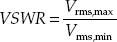
The standing-wave pattern shown in Fig. 3.17 has VSWR of 4/1, or 4.
Assuming that the standing waves are due entirely to a mismatch between load impedance and characteristic impedance of the line, the VSWR is simply given by either
whichever produces a result that is greater than 1.
A VSWR equal to 1 means that the line is properly terminated, and there will be no reflected waves. However, if the VSWR is large, this means that the line is not properly terminated (e.g., a line with little or no impedance attached to either a short or open circuit), and hence there will be major reflections.
The VSWR also can be expressed in terms of forward and reflected waves by the following formula:
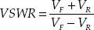
To make this expression meaningful, you can convert it into an expression in terms of forward and reflected power. In the conversion, you use P = IV = V2/R. Taking P to be proportional to V2, you can rewrite the VSWR in terms of forward and reflected power as follows:
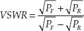
Rearranging this equation, you get the percentage of reflected power and percentage of absorbed power in terms of VSWR:
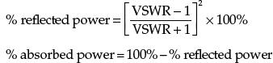
EXAMPLE (VSWR)
Find the standing-wave ratio (VSWR) of a 50-Ω line used to feed a 200-Ω load. Also find the percentage of power that is reflected at the load and the percentage of power absorbed by the load.
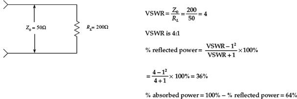
FIGURE 3.18
Techniques for Matching Impedances
This section looks at a few impedance-matching techniques. As a rule of thumb, with most low-frequency applications where the signal’s wavelength is much larger than the cable length, there is no need to match line impedances. Matching impedances is usually reserved for high-frequency applications. Moreover, most electrical equipment, such as oscilloscopes, video equipment, etc., has input and output impedances that match the characteristic impedances of coaxial cables (typically 50 Ω). Other devices, such as television antenna inputs, have characteristic input impedances that match the characteristic impedance of twin-lead cables (300 Ω). In such cases, the impedance matching is already taken care of.
A general method used to match impedance makes use of the impedance-matching network shown here. To match impedances, choose
The attenuation seen from the Z1 end will be A1 = R1/Z2 + 1. The attenuation seen from the Z2 end will be A2 = R1/R2 + R1/Z1 + 1.
For example, if Z1 = 50 W, and Z2 = 125 W, then R1, R2, A1, and A2 are
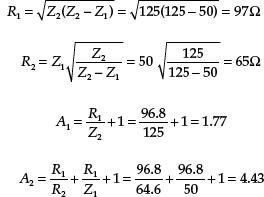
FIGURE 3.19
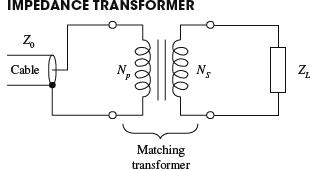
Here, a transformer is used to match the characteristic impedance of a cable with the impedance of a load. By using the formula
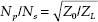
you can match impedances by choosing appropriate values for NP and NS so that the ratio NP/NS is equal to 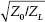.
For example, if you wish to match an 800-Ω impedance line with an 8-Ω load, you first calculate
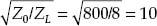
To match impedances, you select NP (number of coils in the primary) and NS (number of coils in the secondary) in such a way that NP/NS = 10. One way of doing this would be to set NP equal to 10 and NS equal to 1. You also could choose NP equal to 20 and NS equal to 2 and you would get the same result.
FIGURE 3.20
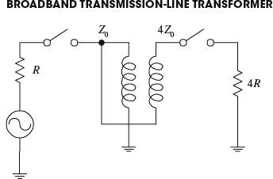
A broadband transmission-line transformer is a simple device that consists of a few turns of miniature coaxial cable or twisted-pair cable wound about a ferrite core. Unlike conventional transformers, this device can more readily handle high-frequency matching (its geometry eliminates capacitive and inductive resonance behavior). These devices can handle various impedance transformations and can do so with incredibly good broadband performance (less than 1 dB loss from 0.1 to 500 MHz).
FIGURE 3.21
FIGURE 3.22
A transmission line with characteristic impedance Z0 can be matched with a load with impedance ZL by inserting a wire segment that has a length equal to one quarter of the transmitted signal’s wavelength (λ/4) and which has an impedance equal to
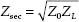
To calculate the segment’s length, you must use the formula λ = v/f, where v is the velocity of propagation of a signal along the cable and f is the frequency of the signal. To find v, use
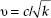
where c = 3.0 × 108 m/s, and k is the dielectric constant of the cable’s insulation.
For example, say you wish to match a 50-Ω cable that has a dielectric constant of 1 with a 200-Ω load. If you assume the signal’s frequency is 100 MHz, the wavelength then becomes
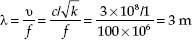
To find the segment length, you plug λ into λ/4. Hence the segment should be 0.75 m long. The wire segment also must have an impedance equal to
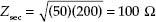
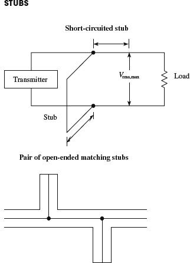
A short length of transmission line that is open ended or short-circuit terminated possesses the property of having an impedance that is reactive. By properly choosing a segment of open-circuit or short-circuit line and placing it in shunt with the original transmission line at an appropriate position along the line, standing waves can be eliminated. The short segment of wire is referred to as a stub. Stubs are made from the same type of cable found in the transmission line. Figuring out the length of a stub and where it should be placed is fairly tricky. In practice, graphs and a few formulas are required. A detailed handbook on electronics is the best place to learn more about using stubs.
FIGURE 3.23
3.2 Batteries
A battery is made up of a number of cells. Each cell contains a positive terminal, or cathode, and a negative terminal, or anode. (Note that most other devices treat anodes as positive terminals and cathodes as negative terminals.)
FIGURE 3.24
When a load is placed between a cell’s terminals, a conductive bridge is formed that initiates chemical reactions within the cell. These reactions produce electrons in the anode material and remove electrons from the cathode material. As a result, a potential is created across the terminals of the cell, and electrons from the anode flow through the load (doing work in the process) and into the cathode.
A typical cell maintains about 1.5 V across its terminals and is capable of delivering a specific amount of current that depends on the size and chemical makeup of the cell. If more voltage or power is needed, a number of cells can be added together in either series or parallel configurations. By adding cells in series, a larger-voltage battery can be made, whereas adding cells in parallel results in a battery with a higher current-output capacity. Figure 3.25 shows a few cell arrangements.
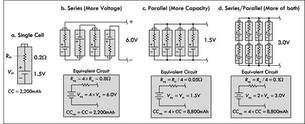
FIGURE 3.25
Battery cells are made from a number of different chemical ingredients. The use of a particular set of ingredients has practical consequences on the battery’s overall performance. For example, some cells are designed to provide high open-circuit voltages, whereas others are designed to provide large current capacities. Certain kinds of cells are designed for light-current, intermittent applications, whereas others are designed for heavy-current, continuous-use applications. Some cells are designed for pulsing applications, where a large burst of current is needed for a short period of time. Some cells have good shelf lives; others have poor shelf lives. Batteries that are designed for one-time use, such as carbon-zinc and alkaline batteries, are called primary batteries. Batteries that can be recharged a number of times, such as nickel metal hydride and lead-acid batteries, are referred to as secondary batteries.
3.2.1 How a Cell Works
A cell converts chemical energy into electrical energy by going through what are called oxidation-reduction reactions (reactions that involve the exchange of electrons). The three fundamental ingredients of a cell used to initiate these reactions include two chemically dissimilar metals (positive and negative electrodes) and an electrolyte (typically a liquid or pastelike material that contains freely floating ions). The following is a little lecture on how a simple lead-acid battery works.
For a lead-acid cell, one of the electrodes is made from pure lead (Pb); the other electrode is made from lead oxide (PbO2); and the electrolyte is made from a sulfuric acid solution (H2O + H2SO4 → 3H+ + SO42− + OH−).
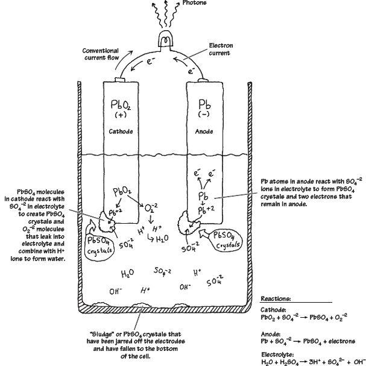
FIGURE 3.26
When the two chemically dissimilar electrodes are placed in the sulfuric acid solution, the electrodes react with the acid (SO4−2, H+ ions), causing the pure lead electrode to slowly transform into PbSO4 crystals. During this transformation reaction, two electrons are liberated within the lead electrode. Now, if you examine the lead oxide electrode, you also will see that it too is converted into PbSO4 crystals. However, instead of releasing electrons during its transformation, it releases O22− ions. These ions leak out into the electrolyte solution and combine with the hydrogen ions to form H2O (water). By placing a load element, say, a lightbulb, across the electrodes, electrons will flow from the electron-abundant lead electrode, through the bulb’s filament, and into the electron-deficient lead oxide electrode.
As time passes, the ingredients for the chemical reactions run out (the battery is drained). To get energy back into the cell, a reverse voltage can be applied across the cell’s terminals, thus forcing the reactions backward. In theory, a lead-acid battery can be drained and recharged indefinitely. However, over time, chunks of crystals will break off from the electrodes and fall to the bottom of the container, where they are not recoverable. Other problems arise from loss of electrolyte due to gasing during electrolysis (a result of overcharging) and due to evaporation.
3.2.2 Primary Batteries
Primary batteries are one-shot deals—once they are drained, it is all over. Common primary batteries include carbon-zinc batteries, alkaline batteries, mercury batteries, silver oxide batteries, zinc air batteries, and silver-zinc batteries. Here are some common battery packages:
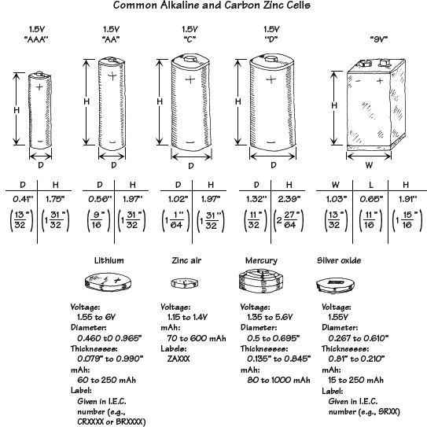
FIGURE 3.27
3.2.3 Comparing Primary Batteries
Carbon-Zinc Batteries
Carbon-zinc batteries (“standard-duty”) are general-purpose primary-type batteries that were popular back in the 1970s, but have become obsolete with the advent of alkaline batteries. These batteries are not suitable for continuous use (only for intermittent use) and are susceptible to leakage. The nominal voltage of a carbon-zinc cell is about 1.5 V, but this value gradually drops during service. Shelf life also tends to be poor, especially at elevated temperatures. The only really positive aspect of these batteries is their low cost and wide size range. They are best suited to low-power applications with intermittent use, such as in radios, toys, and general-purpose low-cost devices. Don’t use these cells in expensive equipment or leave them in equipment for long periods of time—there is a good chance they will leak. Standby applications and applications that require a wide temperature range should also be avoided. In all, these batteries are to be avoided, if you can even find them.
Zinc-Chloride Batteries
Zinc-chloride batteries (“heavy-duty”) are a heavy-duty version of the carbon-zinc battery, designed to deliver more current and provide about 50 percent more capacity. Like the carbon-zinc battery, zinc-chloride batteries are essentially obsolete as compared to alkaline batteries. The terminal voltage of a zinc-chloride cell is initially about 1.5 V, but drops as chemicals are consumed. Unlike carbon-zinc batteries, zinc-chloride batteries perform better at low temperatures, and slightly better at higher temperatures, too. The shelf life is also longer. They tend to have lower internal resistance and higher capacities than carbon-zinc, allowing higher currents to be drawn for longer periods. These batteries are suited to moderate, intermittent use. However, an alkaline battery will provide better performance in similar applications.
Alkaline Batteries
Alkaline batteries are the most common type of household battery you can buy—they have practically replaced the carbon-zinc and zinc-chloride batteries. They are relatively powerful and inexpensive. The nominal voltage of an alkaline cell is again 1.5 V, but doesn’t drop as much during discharge as the previous two battery types. The internal resistance is also considerably lower, and remains so until near the end of the battery’s life cycle. They have very long shelf lives and better high- and low-temperature performance, too. General-purpose alkaline batteries don’t work particularly well on high-drain devices like digital cameras, since the internal resistance limits output current flow. They will still work in your device, but the battery life will be greatly reduced. They are well suited to most general-purpose applications, such as toys, flashlights, portable audio equipment, flashes, digital cameras, and so on. Note that there is a rechargeable version of an alkaline battery, as well.
Lithium Batteries
Lithium batteries use a lithium anode, one of a number of different kinds of cathodes, and an organic electrolyte. They have a nominal voltage of 3.0 V—twice that of most other primary cells—that remains almost flat during the discharge cycle. They also have a very low self-discharge rate, giving them an excellent shelf life—as much as 10 years. The internal resistance is also quite low, and remains so during discharge. It performs well in both low and high temperatures, and advanced versions of this battery are used on satellites, on space vehicles, and in military applications. They are ideal for low-drain applications such as smoke detectors, data-retention devices, pacemakers, watches, and calculators.
Lithium-Iron Disulfide Batteries
Unlike other lithium cells that have chemistries geared to obtaining the greatest capacity in a given package, lithium-iron disulfide cells are a compromise. To match existing equipment and circuits, their chemistry has been tailored to the standard nominal 1.5-V output (whereas other lithium technologies produce double that). These cells are consequently sometimes termed voltage-compatible lithium batteries. Unlike other lithium technologies, lithium-iron disulfide cells are not rechargeable. Internally, the lithium-iron disulfide cell is a sandwich of a lithium anode, a separator, and an iron disulfide cathode with an aluminum cathode collector. The cells are sealed but vented. Compared to the alkaline cells—with which they are meant to compete—lithium-iron disulfide cells are lighter (weighing about 66 percent of same-size alkaline cells) and higher in capacity, and they have a much longer shelf life—even after 10 years on the shelf, lithium disulfide cells still retain most of their capacity. Lithium iron-disulfide cells operate best under heavier loads. In high-current applications, they can supply power for a duration exceeding 260 percent of the time that a similar-sized alkaline cell can supply. This advantage diminishes at lower loads, however, and at very light loads may disappear or even reverse. For example, under a 20-mA load, a certain manufacturer rates its AA-size lithium-disulfide cells to provide power for about 122 hours while its alkaline cells will last for 135 hours. However, under a heavy load of 1 A, the lithium disulfide cell overshadows the alkaline counterpart by lasting 2.1 hours versus only 0.8 hours for the alkaline battery.
Mercury Cells
Zinc-mercuric oxide, or “mercury,” cells take advantage of the high electrode potential of mercury to offer a very high energy density combined with a very flat discharge curve. Mercuric oxide forms the positive electrode, sometimes mixed with manganese dioxide. The nominal terminal voltage of a mercury cell is 1.35 V, and this remains almost constant over the life of the cell. They have an internal resistance that is fairly constant. Although made only in small button sizes, mercury cells are capable of reasonably high-pulsed discharge current and are thus suitable for applications such as quartz analog watches and hearing aids as well as voltage references in instruments, and the like.
Silver Oxide Batteries
The silver oxide battery is the predominate miniature battery found on the market today. Silver oxide cells are made only in small button sizes of modest capacity but have good pulsed discharge capability. They are typically used in watches, calculators, hearing aids, and electronic instruments. This battery’s general characteristics include higher voltage than comparable mercury batteries, flatter discharge curve than alkaline batteries, good low-temperature performance, good resistance to shock and vibration, essentially constant internal resistance, excellent service maintenance, and long shelf life—exceeding 90 percent charge after storage for five years. The nominal terminal voltage of a silver oxide cell is slightly over 1.5 V and remains almost flat over the life of the cell. Batteries built from cells range from 1.5 V to 6.0 V and come in a variety of sizes. Silver oxide hearing aid batteries are designed to produce greater volumetric energy density at higher discharge rates than silver oxide watch or photographic batteries. Silver oxide photo batteries are designed to provide constant voltage or periodic high-drain pulses with or without a low drain background current. Silver oxide watch batteries, using a sodium hydroxide (NaOH) electrolyte system are designed primarily for low-drain continuous use over long periods of time—typically five years. Silver oxide watch batteries using potassium hydroxide (KOH) electrolyte systems are designed primarily for continuous low drains with periodic high-drain pulse demands, over a period of about two years.
Zinc Air Batteries
Zinc air cells offer very high energy density and a flat discharge curve, but have relatively short working lives. The negative electrode is formed of powdered zinc, mixed with the potassium hydroxide electrolyte to form a paste. This is retained inside a small metal can by a separator membrane that is porous to ions, and on the other side of the membrane is simply air to provide the oxygen (which acts as the positive electrode). The air/oxygen is inside an outer can of nickel-plated steel that also forms the cell’s positive connection, lined with another membrane to distribute the oxygen over the largest area. Actually there is no oxygen or air in the zinc-oxygen cell when it’s made. Instead, the outer can has a small entry hole with a covering seal, which is removed to admit air and activate the cell. The zinc is consumed as the cell supplies energy, which is typically for around 60 days. The nominal terminal voltage of a zinc-oxygen cell is 1.45 V, and the discharge curve is relatively flat. The internal resistance is only moderately low, and they are not suitable for heavy or pulsed discharging. They are found mainly in button and pill packages, and are commonly used in hearing aids and pagers. Miniature zinc air batteries are designed primarily to provide power to hearing aids. In most hearing aid applications, zinc air batteries can be directly substituted for silver oxide or mercuric oxide batteries and will typically give the longest hearing aid service of any common battery system. Notable characteristics include high capacity-to-volume ratio for a miniature battery, more stable voltage at high currents when compared to mercury or silver oxide batteries, and essentially constant internal resistance. They are activated by removing the covering (adhesive tab) from the air access hole, and they are most effective in applications that consume battery capacity in a few weeks.
TABLE 3.5 Primary Battery Comparison Chart
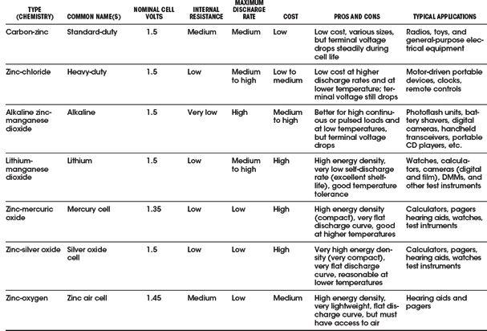
FIGURE 3.28
3.2.4 Secondary Batteries
Secondary batteries, unlike primary batteries, are rechargeable by nature. The actual discharge characteristics for secondary batteries are similar to those of primary batteries, but in terms of design, secondary batteries are made for long-term, high-power-level discharges, whereas primary batteries are designed for short discharges at low power levels. Most secondary batteries come in packages similar to those of primary batteries, with the exception of, say, lead-acid batteries and special-purpose batteries. Secondary batteries are used to power such devices as laptop computers, portable power tools, electric vehicles, emergency lighting systems, and engine starting systems.
Here are some common packages for secondary batteries:
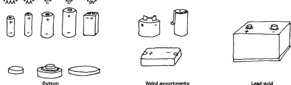
FIGURE 3.29
Comparing Secondary (Rechargeable) Batteries
LEAD-ACID BATTERIES
Lead-acid batteries are typically used for high-power applications, such as motorized vehicle power and battery backup applications. There are basically three types of lead-acid batteries: flooded lead-acid, valve-regulated lead-acid (VRLA), and sealed lead-acid (SLA). The flooded types must be stood upright and tend to lose electrolytes while producing gas over time. The SLA and VRLA are designed for a low overvoltage potential to prohibit the battery from reaching its gas-generating potential during discharge. However, SLA and VRLA can never be charged to their full potential. VRLA is generally used for stationary applications, while the SLA can be used in various positions. Lead-acid batteries typically come in 2-V, 4-V, 6-V, 8-V, and 12-V versions, with capacities ranging from 1 to several thousand amp-hours. The flooded lead-acid battery is used in automobiles, forklifts, wheelchairs, and UPS devices.
An SLA battery uses a gel-type electrolyte rather than a liquid to allow it to be used in any position. However, to prevent gas generation, it must be operated at a lower potential—meaning it’s never fully charged. This means that it has a relatively poor energy density—the lowest for all sealed secondary batteries. However, they’re the cheapest secondary, making them best suited for applications where low-cost, stationary power storage is the main concern. SLA batteries have the lowest self-discharge rate of any of the secondary batteries (about 5 percent per month). They do not suffer from memory effect (as displayed in NiCad batteries), and they perform well with shallow cycling; in fact, they tend to prefer it to deep cycling, although they perform well with intermittent heavy current demands, too. SLA batteries aren’t designed for fast charging—typically 8 to 16 hours for full recharge. They must also always be stored in a charged state. Leaving them in a discharged state can lead to sulfation, a condition that makes the batteries difficult, if not impossible, to recharge. Also, SLA batteries have an environmentally unfriendly electrolyte.
The basic technique for recharging lead-acid batteries, be they flooded, sealed, or valve-regulated, is to read the technical directions that come with them. If you don’t know what you’re doing—say, trying to make your own battery recharger—you may run into a serious problem, such as blowing up batteries with too much pressure, melting them, or destroying the chemistry. (The procedure for charging lead-acid batteries is different from that for NiCad and NiMH batteries in that voltage limiting is used instead of current limiting.)
NICKEL-CADMIUM (NiCAD) BATTERIES
Nickel-cadmium batteries are made using nickel hydroxide as the positive electrode and cadmium hydroxide as the negative electrode, with potassium hydroxide as the electrolyte. Nickel-cadmium batteries have been a very popular rechargeable battery over the years; however, with the introduction of NiMH batteries, they have seen a decline in use. In practical terms, NiCad batteries don’t last very long before needing a recharge. They put out less voltage (per cell) than a standard alkaline (1.2 V versus 1.5 V for alkaline). This means that applications that require four or more alkaline batteries might not work at all with comparable-sized NiCad batteries. During discharge, the average voltage of a sealed NiCad cell is about 1.2 V per cell. At nominal discharge rates, the characteristic is very nearly flat until the cell approaches full discharge. The battery provides most of its energy above 1.0 V per cell. The self-discharge rate of a NiCad is not great, either—around two to three months. However, like SLAs, sealed NiCads can be used in virtually any position. NiCads have a higher energy density than SLAs (about twice as much), and with a relatively low cost, they are popular for powering compact portable equipment: cordless power tools, model boats and cars, and appliances such as flashlights and vacuum cleaners. NiCads suffer from memory effect and are therefore not really suitable for applications that involve shallow cycling or spending most of their time on a float charger. They perform best in situations where they’re deeply cycled. They have a high number of charge/discharge cycles—around 1000.
Use a recommended charger—a constant current–type charger with due regard for heat dissipation and wattage rating. Improper charging can cause heat damage or even high-pressure rupture. Observe proper charging polarity. The safe charge rate for sealed NiCad cells for extended charge periods is 10 hours, or C/10 rate.
NICKEL METAL HYDRIDE (NiMH) BATTERIES
NiMH batteries are very popular secondary batteries, replacing NiCad batteries in many applications. NiMH batteries use a nickel/nickel hydroxide positive electrode, a hydrogen-storage alloy (such as lanthanum-nickel or zirconium-nickel) as a negative electrode, and potassium hydroxide as the electrolyte. They have a higher energy density than standard NiCad batteries (about 30 to 40 percent higher) and don’t require special disposal requirements, either. The nominal voltage of a NiMH battery is 1.2 V per cell, which must be taken into consideration when substituting them into devices that use standard 1.5-V cells such as alkaline cells. They self-discharge in about two to three months and do display some memory effect, but not as bad as NiCad batteries. They are not as happy with a deep discharge cycle as a NiCad battery, and they tend to have a shorter work life. Best results are achieved with load currents of 0.2-C to 0.5-C (one-fifth to one-half of the rated capacity). Typical applications include remote-control vehicles and power tools (although NiMH batteries are rapidly being superceded by Li-ion and LiPo batteries).
Recharging NiMH batteries is a bit complex due to significant heat generation; the charge uses a special algorithm that requires trickle charging and temperature sensing. Unlike NiCad batteries, NiMH batteries have little memory effect. The batteries require regular full discharge to prevent crystalline formation.
Li-ION BATTERIES
Lithium is the lightest of all metals and has the highest electrochemical potential, giving it the possibility of an extremely high energy density. However, the metal itself is highly reactive. While this isn’t a problem with primary cells, it poses an explosion risk with rechargeable batteries. For these to be made safe, lithium-ion technology had to be developed; the technology uses lithium ions from chemicals such as lithium-cobalt dioxide, instead of the metal itself. Typical Li-ion batteries have a negative electrode of aluminum coated with a lithium compound such as lithium-cobalt dioxide, lithium-nickel dioxide, or lithium-manganese dioxide. The positive electrode is generally of copper, coated with carbon (generally either graphite or coke), while the electrolyte is a lithium salt such as lithium-phosphorous hexafluoride, dissolved in an organic solvent such as a mixture of ethylene carbonate and dimethyl carbonate. Li-ion batteries have roughly twice the energy density of NiCads, making them the most compact rechargeable yet in terms of energy storage. Unlike NiCad or NiMH batteries, they are not subject to memory effect, and have a relatively low self-discharge rate—about 6 percent per month, less than half that of NiCads. They are also capable of moderately deep discharging, although not as deep as NiCads, as they have a higher internal resistance. On the other hand, Li-ion batteries cannot be charged as rapidly as NiCads, and they cannot be trickle or float charged, either. They also are significantly more costly than either NiCads or NiMH batteries, making them the most expensive rechargeables of all. Part of this is that they must be provided with built-in protection against both excessive discharging and overcharging (both of which pose a safety risk). Most Li-ion batteries are therefore supplied in self-contained battery packs, complete with “smart” protective circuitry. They are subject to aging, even if not used, and have moderate discharge currents. The main applications for Li-ion batteries are in places where as much energy as possible needs to be stored in the smallest possible space, and with as little weight as possible. They are found in laptop computers, PDAs, camcorders, and cell phones.
Li-ion batteries require special voltage-limiting recharging devices. Commercial Li-ion battery packs contain a protection circuit that prevents the cell voltage from going too high while charging. The typical safety threshold is set to 4.30 V/cell. In addition, temperature sensing disconnects the charging device if the internal temperature approaches 90°C (194°F). Most cells feature a mechanical pressure switch that permanently interrupts the current path if a safe pressure threshold is exceeded. The charge time of all Li-ion batteries, when charged at a 1-C initial current, is about three hours. The battery remains cool during charge. Full charge is attained after the voltage has reached the upper voltage threshold and the current has dropped and leveled off at about 3 percent of the nominal charge current. Increasing the charge current on a Li-ion charger does not shorten the charge time by much. Although the voltage peak is reached more quickly with higher current, the topping charge will take longer.
LITHIUM POLYMER (Li-POLYMER) BATTERIES
The lithium polymer batteries are a lower-cost version of the Li-ion batteries. Their chemistry is similar to that of the Li-ion in terms of energy density, but uses a dry solid polymer electrolyte only. This electrolyte resembles a plastic-like film that does not conduct electricity but allows an exchange of ions (electrically charged atoms or groups of atoms). The dry polymer is more cost effective during fabrication, and the overall design is rugged, safe, and thin. With a cell thickness measuring as little as 1 mm, it is possible to use this battery in thin compact devices where space is an issue. It is possible to create designs which form part of a protective housing, are in the shape of a mat that can be rolled up, or are even embedded into a carrying case or piece of clothing. Such innovative batteries are still a few years away, especially for the commercial market.
Unfortunately, the dry Li-polymer suffers from poor ion conductivity, due to high internal resistance; it cannot deliver the current bursts needed for modern communication devices. However, it tends to increase in conductivity as the temperature rises, a characteristic suitable for hot climates. To make a small Li-polymer battery more conductive, some gelled electrolyte may be added. Most of the commercial Li-polymer batteries used today for mobile phones are hybrids and contain gelled electrolytes.
The charge process of a Li-polymer battery is similar to that of the Li-ion battery. The typical charge time is around one to three hours. Li-polymer batteries with gelled electrolyte, on the other hand, are almost identical to Li-ion batteries. In fact, the same charge algorithm can be applied.
NICKEL-ZINC (NiZn) BATTERIES
Nickel-zinc batteries are commonly used in light electric vehicles. They are considered the next generation of batteries used for high-drain applications, and are expected to replace sealed lead-acid batteries due to their higher energy densities (up to 70 percent lighter for the same power). They are also relatively cheap compared to NiCad batteries.
NiZn batteries are chemically very similar to NiCad batteries; both use an alkaline electrolyte and a nickel electrode, but they differ significantly in their voltage. The NiZn cell delivers more than 0.4 V of additional voltage both at open circuit and under load. With the additional 0.4 V per cell, multicell batteries can be constructed in smaller packages. For example, a 19.2-V pack can replace a 14.4-V NiCad pack, representing a 25 percent lower cell space and delivering higher power and a 45 percent lower impedance. They are also less expensive than most rechargeables. They are safe (abuse-tolerant). The life cycle is a bit better than for NiCad batteries for typical applications. They have superior shelf life when compared to lead-acid. Also, they are considered environmentally green—both nickel and zinc are nontoxic and easily recycled.
In terms of recharge times, it takes less than two hours to achieve full recharge; there is an 80 percent charge in one hour. This feature makes them useful in cordless power tools. Their high energy density and high discharge rate make them suitable for applications that demand large amounts of power in small, lightweight packages. They are found in cordless power tools, UPS systems, electric scooters, high-intensity dc lighting and the like.
NICKEL-IRON (NiFe) BATTERIES
Nickel-iron batteries, also called nickel alkaline or NiFe batteries, were introduced in 1900 by Thomas Edison. These are very robust batteries that are tolerant of abuse and can have very long life spans (30 years or more). The open-circuit voltage of these cells is 1.4 V, and the discharge voltage is about 1.2 V. They withstand overcharge and over-discharge. They accept high depth of discharge (deep cycling) and can remain discharged for long periods without damage, unlike lead-acid batteries that need to be stored in a charged state. They are, however, very heavy and bulky. Also, the low reactivity of the active components limits high-discharge performance. The cells take a charge slowly, give it up slowly, and have a steep voltage dropoff with state of charge. Furthermore, they have a low energy density compared to other secondary batteries, and a high self-discharge rate. NiFe batteries are used in applications similar to those for lead-acid batteries, but oriented toward a necessity of longevity. (A typical lead-acid battery will last around five years, compared to around 30 to 80 years for a NiFe battery.)
TABLE 3.6 Rechargeable Battery Comparison Chart
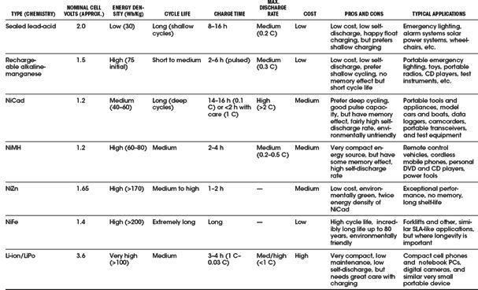
RECHARGEABLE ALKALINE-MANGANESE (RAM) BATTERIES
Rechargeable alkaline-manganese, or RAM, batteries are the rechargeable version of primary alkaline batteries. Like the primary technology, they use a manganese dioxide positive electrode and potassium hydroxide electrode, but the negative electrode is now a special porous zinc gel designed to absorb hydrogen during the charging process. The separator is also laminated to prevent it being pierced by zinc dendrites. These are often considered a poor substitute for a rechargeable, as compared to a NiCad or NiMH battery. RAM batteries have a tendency to plummet in capacity over few recharge cycles. It is feasible for a RAM battery to lose 50 percent of its capacity after only eight cycles. On the positive side, they are inexpensive and readily available. They can usually be used as a direct replacement for non-rechargeable batteries, but they usually have a lower nominal voltage, making them unsuitable for some devices, except in high-drain devices like digital cameras. They have a low self-discharge rate and can be stored on standby for up to 10 years. Also, they are environmentally friendly (no toxic metals are used) and maintenance-free; there is no need for cycling or worrying about memory effect. On the short side, they have limited current-handling capability and are limited to light-duty applications such as flashlights and other low-cost portable electronic devices that require shallow cycling. Recharging a RAM battery requires a special recharger; if you charge them in a standard charger, they may explode.
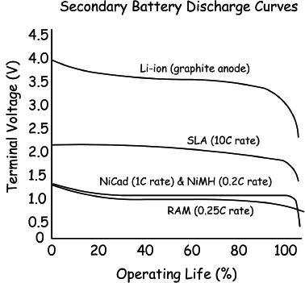
FIGURE 3.30
THE SUPERCAPACITOR
The supercapacitor isn’t really a battery but a cross between a capacitor and a battery. It resembles a regular capacitor, but uses special electrodes and some electrolytes. There are three kinds of electrode material found in a supercapacitor: high-surface-area-activated carbons, metal oxide, and conducting polymers. The one using high-surface-area-activated carbons is the most economical to manufacture. This system is also called double layer capacitor (DLC) because the energy is stored in the double layer formed near the carbon electrode surface. The electrolyte may be aqueous or organic. The aqueous electrolyte offers low internal resistance but limits the voltage to 1 V. In contrast, the organic electrolyte allows 2 and 3 V of charge, but the internal resistance is higher.
To make the supercapacitor practical for use in electronic circuits, higher voltages are needed. Connecting the cells in series accomplishes this task. If more than three or four capacitors are connected in series, voltage balancing must be used to prevent any cell from reaching overvoltage.
Supercapacitors have values from 0.22 F upwards to several F. They have higher energy storage capacity than electrolytic capacitors, but a lower capacity than a battery (approximately  that of a NiMH battery). Unlike electrochemical batteries that deliver a fairly steady voltage, the voltage of a supercapacitor drops from full voltage to zero volts without the customary flat voltage curve characteristic of most batteries. For this reason, supercapacitors are unable to deliver the full charge. The percentage of charge that is available depends on the voltage requirements of the applications. For example, a 6-V battery is allowed to discharge to 4.5 V before the equipment cuts off; the supercapacitor reaches that threshold with the first quarter of the discharge. The remaining energy slips into an unusable voltage range.
that of a NiMH battery). Unlike electrochemical batteries that deliver a fairly steady voltage, the voltage of a supercapacitor drops from full voltage to zero volts without the customary flat voltage curve characteristic of most batteries. For this reason, supercapacitors are unable to deliver the full charge. The percentage of charge that is available depends on the voltage requirements of the applications. For example, a 6-V battery is allowed to discharge to 4.5 V before the equipment cuts off; the supercapacitor reaches that threshold with the first quarter of the discharge. The remaining energy slips into an unusable voltage range.
The self-discharge of the supercapacitor is substantially higher than that of the electrochemical battery. Typically, the voltage of the supercapacitor with an organic electrolyte drops from full charge to the 30 percent level in as little as 10 hours. Other supercapacitors can retain the charged energy longer. With these designs, the capacity drops from full charge to 85 percent in 10 days. In 30 days, the voltage drops to roughly 65 percent, and to 40 percent after 60 days.
The most common supercapacitor applications are memory backup and standby power for real-time clock ICs. Only in special applications can the supercapacitor be used as a direct replacement for a chemical battery. Often the supercapacitor is used in tandem with a battery (placed across its terminals, with a provision in place to limit high influx of current when equipment is turned on) to improve the current handling of the battery: during low load current the battery charges the supercapacitor; the stored energy of the supercapacitor kicks in when a high load current is requested. In this way the supercapacitor acts to filter and smooth pulsed load currents. This enhances the battery’s performance, prolongs the runtime, and even extends the longevity of the battery.
Limitations include an inability to use the full energy spectrum—depending on the application, not all energy is available. A supercapacitor has low energy density, typically holding 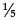 to the energy of an electrochemical battery. Cells have low voltages—serial connections are needed to obtain higher voltages. Voltage balancing is required if more than three capacitors are connected in series. Furthermore, the self-discharge is considerably higher than that of an electrochemical battery.
Advantages include a virtually unlimited life cycle—supercapacitors are not subject to the wear and aging experienced by electrochemical batteries. Also, low impedance can enhance pulsed current demands on a battery when placed in parallel with the battery. Supercapacitors experience rapid charging—with low-impedance versions reaching full charge within seconds. The charge method is simple—the voltage-limiting circuit compensates for self-discharge.
FIGURE 3.31
3.2.5 Battery Capacity
Batteries are given a capacity rating that indicates how much electrical energy they are capable of delivering over a period of time. The capacity rating is specified in terms of ampere-hours (Ah) and millampere-hours (mAh). Knowing the battery capacity, it is possible to estimate how long the battery will last before being considered dead. The following example illustrates this.
Example: A battery with a capacity of 1800 mAh is to be used in a device that draws 120 mA continuously. Ignoring possible loss in capacity as a result of load current magnitude, how long should the battery be able to deliver power?
Answer: Ideally, this would be:
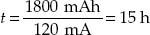
Note: In reality, you must consult the battery manufacturer’s data sheets and analyze their discharge graphs (voltage as a function of time and of load current) to get an accurate determination of actual discharge time. As the load current increases, there is an apparent loss in battery capacity caused by internal resistance.
Typical capacity ratings for AAA, AA, C, D, and 9-V NiMH batteries are 1000 mAh (AAA), 2300 mAh (AA), 5000 mAh (C), 8500 mAh (D), 250 mAh (9).
C Rating
The charge and discharge currents of a battery are measured in capacity rating or C rating. The capacity represents the efficiency of a battery to store energy and its ability to transfer this energy to a load. Most portable batteries, with the exception of lead-acid, are rated at 1 C. A discharge rate of 1 C draws a current equal to the rated capacity that takes one hour (h). For example, a battery rated at 1000 mAh provides 1000 mA for 1 hour if discharged at 1 C rate. The same discharge at 0.5 C provides 500 mA for 2 hours. At 2 C, the same battery delivers 2000 mA for 30 minutes. 1 C is often referred to as a 1-hour discharge; 0.5 C would be 2 hours, and 0.1C would be a 10-hour discharge. The discrepancy in C rates between different batteries is largely dependent on the internal resistance.
Example: Determine the discharge time and average current output of a battery with a capacity rating of 1000 mAh if it is discharged at 1 C. How long would it take to discharge at 5 C, 2 C, 0.5 C, 0.2 C, and 0.05 C?
Answer: At 1 C, the battery is attached to a load drawing 1000 mA (rated capacity/hour), so the discharge time is:
t = 1 hC/C rating = 1 hC/1 C = 1 h
At 5 C, the battery is attached to a load drawing 5000 mA (five times rated capacity/hour), so the discharge time is:
t = 1 hC/C rating = 1 hC/5 C = 0.2 h
At 2 C, the battery is attached to a load drawing 2000 mA (two times rated capacity/hour), so the discharge time is:
t = 1 hC/C rating = 1 hC/2 C = 0.5 h
At 0.5 C, the battery is attached to a load drawing 500 mA (half the rated capacity/hour), so the discharge time is:
t = 1 hC/C rating = 1 hC/0.5 C = 2 h
At 0.2 C, the battery is attached to a load drawing 200 mA (20 percent rated capacity/hour) so the discharge time is:
t = 1 hC/C rating = 1 hC/0.2 C = 5 h
At 0.05 C, the battery is attached to a load drawing 50 mA (5 percent rated capacity/hour) so the discharge time is:
t = 1 hC/C rating = 1 hC/0.05 C = 20 h
Again, note that these values are estimates. When load currents increase (especially when C values get large), the capacity level drops below nominal values—due to nonideal internal characteristics such as internal resistance—and must be determined using manufacturer’s discharge curves and Peurkert’s equation. Do a search of the Internet, using “Peurkert’s equation” as a keyword, to learn more.
3.2.6 Note on Internal Voltage Drop of a Battery
Batteries have an internal resistance that is a result of the imperfect conducting elements that make up the battery (resistance in electrodes and electrolytes). Though the internal resistance may appear low (around 0.1 Ω for an AA alkaline battery, or 1 to 2 Ω for a 9-V alkaline battery), it can cause a noticeable drop in output voltage if a low-resistance (high-current) load is attached to it. Without a load, we can measure the open-circuit voltage of a battery, as shown in Fig. 3.32a. This voltage is essentially equal to the battery’s rated nominal voltage—the voltmeter has such a high input resistance that it draws practically no current, so there is no appreciable voltage drop. However, if we attach a load to the battery, as shown in Fig. 3.32, the output terminal voltage of the battery drops. By treating the internal resistance Rin and the load resistance Rload as a voltage divider, you can calculate the true output voltage present across the load—see the equation in Fig. 3.32b.
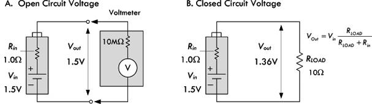
FIGURE 3.32
Batteries with large internal resistances show poor performance in supplying high current pulses. (Consult the battery comparison section and tables to determine which batteries are best suited for high-current, high-pulse applications.) Internal resistance also increases as the battery discharges. For example, a typical alkaline AA battery may start out with an internal resistance of 0.15 Ω when fresh, but may increase to 0.75 Ω when 90 percent discharged. The following list shows typical internal resistance for various batteries found in catalogs. The values listed should not be assumed to be universal—you must check the specs for your particular batteries.
| 9-V zinc carbon |
35 Ω |
| 9-V lithium |
16 to 18 Ω |
| 9-V alkaline |
1 to 2 Ω |
| AA alkaline |
0.15 Ω (0.30 Ω at 50 percent discharge) |
| AA NiMH |
0.02 Ω (0.04 Ω at 50 percent discharge) |
| D Alkaline |
0.1 Ω |
| D NiCad |
0.009 Ω |
| D SLA |
0.006 Ω |
| AC13 zinc air |
5 Ω |
| 76 silver |
10 Ω |
| 675 mercury |
10 Ω |
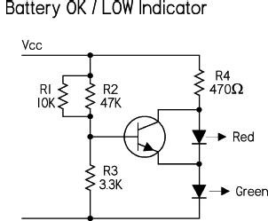
Here a green LED is used to indicate that the battery is okay. This stays on all the time to indicate that the battery is live, and the red LED comes on when the battery voltage falls below the set threshold. A green LED has around 2.0 V on when it is illuminated. This value varies a bit with different manufacturers, but is pretty well matched within any batch. Add the base emitter voltage, and you need 2.6 V on the base of the right transistor (i.e., across the 3k3) to turn on the transistor. 2.6 V across 3k3 needs 9.1 across the supply rail. Below this threshold voltage, the transistor is off and the red LED is on. Above this voltage, the red LED is off. By adjusting the values of the three resistors, you can alter the threshold level. We’ll discuss transistors and LEDs later on in this book.
FIGURE 3.33
3.3 Switches
A switch is a mechanical device that interrupts or diverts electric current flow within a circuit.
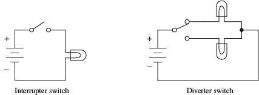
FIGURE 3.34
Two slider-type switches are shown in Fig. 3.35. The switch in Fig. 3.35a acts as an interrupter, whereas the switch in Fig. 3.35b acts as a diverter.
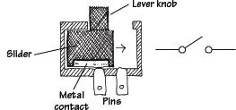
(a) When the lever is pushed to the right, the metal strip bridges the gap between the two contacts of the switch, thus allowing current to flow. When the lever is pushed to the left, the bridge is broken, and current will not flow.
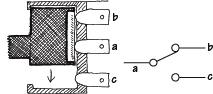
(b) When the lever is pushed upward, a conductive bridge is made between contacts a and b. When the lever is pushed downward, the conductive bridge is relocated to a position where current can flow between contact a and c.
FIGURE 3.35
Other kinds of switches, such as push-button switches, rocker switches, magnetic-reed switches, etc., work a bit differently than slider switches. For example, a magnetic-reed switch uses two thin pieces of leaflike metal contacts that can be forced together by a magnetic field. This switch, as well as a number of other unique switches, will be discussed later on in this section.
3.3.2 Describing a Switch
A switch is characterized by its number of poles and by its number of throws. A pole represents, say, contact a in Fig. 3.35b. A throw, on the other hand, represents the particular contact-to-contact connection, say, the connection between contact a and contact b or the connection between contact a and contact c in Fig. 3.35b. In terms of describing a switch, the following format is used: (number of poles) “P” and (number of throws) “T.” The letter P symbolizes “pole,” and the letter T symbolizes “throw.” When specifying the number of poles and the number of throws, a convention must be followed: When the number of poles or number of throws equals 1, the letter S, which stands for “single,” is used. When the number of poles or number of throws equals 2, the letter D, which stands for “double,” is used. When the number of poles or number of throws exceeds 2, integers such as 3, 4, or 5 are used. Here are a few examples: SPST, SPDT, DPST, DPDT, DP3T, and 3P6T. The switch shown in Fig. 3.35a represents a single-pole single-throw switch (SPST), whereas the switch in Fig. 3.35b represents a single-pole double-throw switch (SPDT).
Two important features to note about switches include whether a switch has momentary contact action and whether the switch has a center-off position. Momentary-contact switches, which include mainly pushbutton switches, are used when it is necessary to only briefly open or close a connection. Momentary-contact switches come in either normally closed (NC) or normally open (NO) forms. A normally closed pushbutton switch acts as a closed circuit (passes current) when left untouched. A normally open pushbutton switch acts as an open circuit (broken circuit) when left untouched. Center-off position switches, which are seen in diverter switches, have an additional “off” position located between the two “on” positions. It is important to note that not all switches have center-off or momentary-contact features—these features must be specified.
FIGURE 3.36
3.3.3 Kinds of Switches
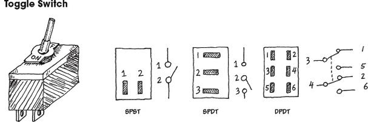
FIGURE 3.37
A reed switch consists of two closely spaced leaflike contacts that are enclosed in an air-tight container. When a magnetic field is brought nearby, the two contacts will come together (if it is a normally open reed switch) or will push apart (if it is a normally closed reed switch).
These switches are used to encode digital information. A mechanism inside the switch will “make” or “break” connections between the switch pairs according to the position of the dial on the face of the switch. These sitches come in either true binary/hexadecimal and complementary binary/hexadecimal forms. The charts below show how these switches work:
DIP stands for “dual-inline package.” The geometry of this switch’s pin-outs allows the switch to be placed in IC sockets that can be wired directly into a circuit board.
This type of switch is used as a level-sensing switch. In a normally closed mercury tilt-over switch, the switch is “on” when oriented vertically (the liquid mercury will make contact with both switch contacts). However, when the switch is tilted, the mercury will be displaced, hence breaking the conductive path.
These days, a metal ball and pair of contacts are more common than the toxic and expensive mercury.
3.3.4 Simple Switch Applications
Here’s a simple home security alarm that’s triggered into action (buzzer and light go on) when one of the normally open switches is closed. Magnetic reed switches work particularly well in such applications.
FIGURE 3.38
Here’s a switch network that allows an individual to turn a light on or off from either of two locations. This setup is frequently used in household wiring applications.
FIGURE 3.39
FIGURE 3.40
A DPDT switch, shown here, can be used to reverse the direction of current flow. When the switch is thrown up, current will flow throw the left light-emitting diode (LED). When the switch is thrown down, current will flow throw the right LED. (LEDs only allow current to flow in one direction.)
FIGURE 3.41
Say you want to control a remote device by means of a two-wire line. Let’s also assume that the remote device has seven different operational settings. One way of controlling the device would be to design the device in such a way that if an individual resistor within the device circuit were to be altered, a new function would be enacted. The resistor may be part of a voltage divider, may be attached in some way to a series of window comparators (see op amps), or may have an analog-to-digital converter interface. After figuring out what valued resistor enacts each new function, choose the appropriate valued resistors and place them together with a rotary switch. Controlling the remote device becomes a simple matter of turning the rotary switch to select the appropriate resistor.
3.4 Relays

Relays are electrically actuated switches. The three basic kinds of relays include mechanical relays, reed relays, and solid-state relays. For a typical mechanical relay, a current sent through a coil magnet acts to pull a flexible, spring-loaded conductive plate from one switch contact to another. Reed relays consist of a pair of reeds (thin, flexible metal strips) that spring together whenever a current is sent through an encapsulating wire coil. A solid-state relay is a device that can be made to switch states by applying external voltages across n-type and p-type semiconductive junctions (see Chap. 4). In general, mechanical relays are designed for high currents (typically 2 to 15 A) and relatively slow switching (typically 10 to 100 ms). Reed relays are designed for moderate currents (typically 500 mA to 1 A) and moderately fast switching (0.2 to 2 ms). Solid-state relays, on the other hand, come with a wide range of current ratings (a few microamps for low-powered packages up to 100 A for high-power packages) and have extremely fast switching speeds (typically 1 to 100 ns). Some limitations of both reed relays and solid-state relays include limited switching arrangements (type of switch section) and a tendency to become damaged by surges in power.
FIGURE 3.42
A mechanical relay’s switch section comes in many of the standard manual switch arrangements (e.g., SPST, SPDT, DPDT, etc.). Reed relays and solid-state relays, unlike mechanical relays, typically are limited to SPST switching. Some of the common symbols used to represent relays are shown below.
FIGURE 3.43
The voltage used to activate a given relay may be either dc or ac. For, example, when an ac current is fed through a mechanical relay with an ac coil, the flexible-metal conductive plate is pulled toward one switch contact and is held in place as long as the current is applied, regardless of the alternating current. If a dc coil is supplied by an alternating current, its metal plate will flip back and forth as the polarity of the applied current changes.
Mechanical relays also come with a latching feature that gives them a kind of memory. When one control pulse is applied to a latching relay, its switch closes. Even when the control pulse is removed, the switch remains in the closed state. To open the switch, a separate control pulse must be applied.
3.4.1 Specific Kinds of Relays
Typical mechanical relays are designed for switching relatively large currents. They come with either dc or ac coils. Dc-actuated relays typically come with excitation-voltage ratings of 6, 12, and 24 V dc, with coil resistances (coil ohms) of about 40, 160, and 650 Ω, respectively. ac-actuated relays typically come with excitation-voltage ratings of 110 and 240 V ac, with coil resistances of about 3400 and 13600 Ω, respectively. Switching speeds range from about 10 to 100 ms, and current ratings range from about 2 to 15 A.
Miniature relays are similar to subminiature relays, but they are designed for greater sensitivity and lower-level currents. They are almost exclusively actuated by dc voltages but may be designed to switch ac currents. They come with excitation voltages of 5, 6, 9, and 12, and 24 V dc, with coil resistances from 50 to 3000 Ω.
Two thin metal strips, or reeds, act as movable contacts. The reeds are placed in a glass-encapsulated container that is surrounded by a coil magnet. When current is sent through the outer coil, the reeds are forced together, thus closing the switch. The low mass of the reeds allows for quick switching, typically around 0.2 to 2 ms. These relays come with dry or sometimes mercury-wetted contacts. They are dc-actuated and are designed to switch lower-level currents, and come with excitation voltages of 5, 6, 12, and 24 V dc, with coil resistances around 250 to 2000 Ω. Leads are made for PCB mounting.
These relays are made from semiconductor materials. Solid-state relays include transistors (FETs, BJTs) and thyristors (SCRs, triacs, diacs, etc.). Solid-state relays do not have a problem with contact wear and have phenomenal switching speeds. However, these devices typically have high “on” resistances, require a bit more fine tuning, and are much less resistant to overloads when compared with electromechanical relays. Solid-state devices will be covered later in this book.
FIGURE 3.44
3.4.2 A Few Notes about Relays
To make a relay change states, the voltage across the leads of its magnetic coil should be at least within ±25 percent of the relay’s specified control-voltage rating. Too much voltage may damage or destroy the magnetic coil, whereas too little voltage may not be enough to “trip” the relay or may cause the relay to act erratically (flip back and forth).
The coil of a relay acts as an inductor. Now, inductors do not like sudden changes in current. If the flow of current through a coil is suddenly interrupted, say, a switch is opened, the coil will respond by producing a sudden, very large voltage across its leads, causing a large surge of current through it. Physically speaking, this phenomenon is a result of a collapsing magnetic field within the coil as the current is terminated abruptly. [Mathematically, this can be understood by noticing how a large change in current (dI/dt) affects the voltage across a coil (V = LdI/dt).] Surges in current that result from inductive behavior can create menacing voltage spikes (as high as 1000 V) that can have some nasty effects on neighboring devices within the circuit (e.g., switches may get zapped, transistors may get zapped, individuals touching switches may get zapped, etc.). Not only are these spikes damaging to neighboring devices, they are also damaging to the relay’s switch contacts (contacts will suffer a “hard hit” from the flexible-metal conductive plate when a spike occurs in the coil).
The trick to getting rid of spikes is to use what are called transient suppressors. You can buy these devices in prepackaged form, or you can make them yourself. The following are a few simple, homemade transient suppressors that can be used with relay coils or any other kind of coil (e.g., transformer coils). Notably, the switch incorporated within the networks below is only one of a number of devices that may interrupt the current flow through a coil. In fact, a circuit may not contain a switch at all but may contain other devices (e.g., transistors, thyristors, etc.) that may have the same current-interrupting effect.
Placing a diode in reverse bias across a relay’s coil eliminates voltage spikes by going into conduction before a large voltage can form across the coil. The diode must have a peak current capability able to handle currents equivalent to the maximum current that would have been flowing through the coil before the current supply was interrupted. A good general-purpose diode that works well for just such applications is the 1N4004 diode.
When dealing with ac-actuated relays, using a diode to eliminate voltage spikes will not work—the diode will conduct on alternate half-cycles. Using two diodes in reverse parallel will not work either—the current will never make it to the coil. Instead, an RC series network placed across the coil can be used. The capacitor absorbs excessive charge, and the resistor helps control the discharge. For small loads driven from the power line, setting R = 100 Ω and C = 0.05 μF works fine for most cases. (Note: There are special devices, such as bidirectional TVs, MOVs, and MTLVs, that are designed for dc transients. See Sec. 4.5.)
FIGURE 3.45
3.4.3 Some Simple Relay Circuits
Here, a dc-powered SPDT relay is used to relay current to one of two light bulbs. When the switch in the control circuit is opened, the relay coil receives no current; hence the relay is relaxed, and current is routed to the upper bulb. When the switch in the control circuit is closed, the relay coil receives current and pulls the flexible-metal conductive plate downward, thus routing current to the lower bulb. The diode acts as a transient suppressor. Note that all components must be selected according to current and voltage ratings.
Here, an ac-actuated relay is used to switch ac current to one of two ac-rated light bulbs. The behavior in this circuit is essentially the same as in the preceding circuit. However, currents and voltages are all ac, and an RC network is used as a transient suppressor. Make sure that resistor and capacitor are rated for a potential transient current that is as large as the typical coil current. The capacitor must be rated for ac line voltage. A discrete transient suppressor (e.g., bipolar TVs or MOV) can take the place of an RC network.
If a relay is to be driven by an arbitrary control voltage, this circuit can be used. The npn bipolar transistor acts as a current-flow control valve. With no voltage or input current applied to the transistor’s base lead, the transistor’s collector-to-emitter channel is closed, hence blocking current flow through the relay’s coil. However, if a sufficiently large voltage and input current are applied to transistor’s base lead, the transistor’s collector-to-emitter channel opens, allowing current to flow through the relay’s coil.
FIGURE 3.46
3.5 Resistors
There are various kinds of resistors available today. There are fixed resistors, variable resistors, digitally adjustable resistors, fusible resistors, photoresistors, and various resistor arrays (networks). Figure 3.47 shows schematic symbols and pictures of some of the most common types.
FIGURE 3.47
Resistors perform two basic functions in electronics: to limit current flow and to set voltage levels within a circuit. Figure 3.48 shows a resistor being used to reduce current flow to an LED. Without the resistor, the LED would receive excess current capable of melting its sensitive p-n junction. A variation of the LED circuit is shown with a variable resistor in series with the current-limiting resistor. The variable resistor (or potentiometer, or pot) provides additional current limiting with the desired effect of controlling the brightness of the LED.
FIGURE 3.48
Figure 3.48 demonstrates how two resistors are used to create a voltage divider capable of providing a dc voltage that is a fraction of the input voltage. In this example, a voltage of 12 V is reduced to a voltage of 5 V—a usable logic HIGH level for a microcontroller’s input. A photoresistor replacing one of the voltage divider resistors acts as a variable resistor whose resistance decreases with light intensity. When this resistance decreases, the voltage present at the microcontroller’s input increases, eventually reaching a logic HIGH level. Once a logic HIGH is set up, it is then up to the microcontroller’s program to determine what course of action to take next.
The key features of current limiting and voltage setting are implemented in various ways in electronics. Resistors are used to set operating current and signal levels in circuits, provide voltage reduction, set precise gain values in precision circuits, act as shunts in ammeters and voltage meters, behave like damping agents in oscillators and timer circuits, act as bus and line terminators in digital circuits, provide feedback networks for amplifiers, and act as pullup and pulldown elements in digital circuits. They are also used in attenuators and bridge circuits. Special kinds of resistors are even used as fuses.
3.5.1 Resistance and Ohm’s Law
From Chap. 2, we learned that if a dc voltage is applied across a resistor, the amount of current that will flow through the resistor can be found using Ohm’s law—simply rearrange the equation (I = V/R). To find the power dissipated as heat by the resistor, apply the second equation below. By plugging Ohm’s law into the power equation, you also get P = I2 × R and P = V2/R, which come in handy, too.
V = I × R (Ohm’s law)
P = I × V (Power law)
R is the resistance, or the resistor, expressed in ohms (Ω), P is the power loss in watts (W), V has the voltage in volts (V), and I is the current in amperes (A).
Resistance values are given in kiloohms (kΩ) or megaohms (MΩ), where k represents 1000 and M represents 1,000,000. So a 3.3-kΩ resistor is equal to 3300 Ω, while a 2M resistor is equal to 2,000,000 Ω. Voltage, current, and power are often expressed in millivolts (mV), milliamps (mA), and milliwatts (mW), where m is equal to 0.001. 1 mV = 0.001 V; 200 mA = 0.2 A, 33 mW = 0.33 W.
As an example, in Fig. 3.49, the amount of current through a 100-Ω resistor attached to a 12-V battery is I = 12 V/100 Ω = 0.120 A or 120 mA. The power loss due to heating becomes P = 0.120 A × 12 V = 1.44 W.
FIGURE 3.49
Determining the power loss is very important when designing circuits. All real resistors have maximum allowable power ratings that must not be exceeded. If you exceed the power rating you’ll probably end up frying your resistor, destroying the internal structure, and thus altering the resistance. Typical general-purpose resistors come in  -, ¼-, ½- and 1-W power ratings, while high-power resistors can range from 2 to several hundred watts.
-, ¼-, ½- and 1-W power ratings, while high-power resistors can range from 2 to several hundred watts.
So, going back to our example circuit in Fig. 3.49, the power rating of the resistor must be greater than the calculated dissipated power of 1.44 W. In reality, the power rating should be greater than this for safety. As a rule of thumb, always select a resistor that has a power rating at least twice the maximum value anticipated. Though a 2-W resistor would work in our example, a 3-W resistor would be safer. Other factors, such as ambient temperature, enclosures, resistor groupings, pulsed operation, and additional air cooling will increase or decrease the required power rating of a resistor—see the section on real resistor characteristics for more information.
3.5.2 Resistors in Series and Parallel
Rarely do you see circuits that use a single resistor alone. Usually, resistors are found connected in a variety of ways. The two fundamental ways of connecting resistors are in series and in parallel.
Resistors in Parallel
When two or more resistors are placed in parallel, the voltage across each resistor is the same, but the current through each resistor will vary with resistance. Also, the total resistance of the combination will be lower than that of the lowest resistance value present. The formula for finding the total resistance of resistors in parallel is:
The dots in the equation indicate that any number of resistors can be combined. For only two resistances in parallel (a very common case), the formula reduces to the equation below.
Example: If a 1000-Ω resistor is connected in parallel with one of 3000 Ω, what is the total resistance or equivalent resistance?
An important thing to note after applying these equations is that the current entering the top junction of the resistors in parallel equals the sum of the current entering the resistors (Iin = I1 + I2). This statement is referred to as Kirchhoff’s current law. With this law, and Ohm’s law, you come up with the current divider equation, shown to the right in Fig. 3.50. This equation comes in handy when you know the input current but not the input voltage.
FIGURE 3.50
To find how much power resistors in parallel dissipate, apply the power law, as shown in Fig. 3.49.
Resistors in Series
When a circuit has a number of resistors connected in series, the total resistance of the circuit is the sum of the individual resistances. Also, the amount of current flowing through each resistor in series is the same, while the voltage across each resistor varies with resistance. The formula for finding the total resistance of resistors in series is:
Rtotal = R1 + R2 + R3 + R4 + … (Resistors in series)
The dots indicate that as many resistors as necessary may be added.
Example: If a 1.0-kΩ resistor is placed in series with a 2.0-kΩ resistor, what is the total resistance?
Rtotal = R1 + R2 = 1000 Ω + 2000 Ω = 3000 Ω = 3 kΩ
FIGURE 3.51
If we attach the two resistors to an input voltage Vin = 9 V, the total current flow, which will be the same as the individual current flow through each resistor, is:
To find the voltage drop across each resistor, apply Ohm’s law:
You can use this approach to find the voltage drop across any number of resistors in series. Also, notice that the voltage drop across each resistor is directly proportional to the resistance. The 2000-Ω resistor value is twice as large as the 2000-Ω resistor and the voltage drop across the 2000-Ω resistor is twice as large.
An important thing to notice with the voltage drops is that they all add up to the supply voltage Vin. If you start at the positive terminal of the battery (+9 V) and subtract the 3-V drop across R1 and then subtract the 6-V drop across R2, you end up with zero: +9 V − 3 V − 6 V = 0 V. Another way to put it is to say that the sum of the voltage changes around a closed path is zero. The resistors are power sinks, while the battery is a power source. It is common to assign a + sign to power sources and a − sign to power sinks. This means the voltages across the resistors have the opposite sign from the battery voltage. Adding all the voltages yields zero. This is called Kirchhoff’s voltage law.
Now, if there are only two resistors in series, you can avoid calculating currents and simply apply the following handy equations, referred to as the voltage divider equations:
A voltmeter reading from ground to the middle of the two resistors, which we’ll call the output voltage Vout, will read 6 V, since you’re really just measuring the voltage drop across R2.
3.5.3 Reading Resistor Labels
Axial lead resistors, such as carbon composition, carbon film, and metal film, use color bands to indicate resistance values. The most common labeling scheme uses four bands: the first band represents the first digit, the second band the second digit, the third band the multiplier (as an exponent of 10), and the fourth band the tolerance (if there is no fourth band, the tolerance is 20 percent). The table in Fig. 3.52 indicates the meaning of each color in regard to number, multiplier, and tolerance.
FIGURE 3.52
On precision resistors, you’ll find five bands: the first three bands are used as significant figures, the fourth band is the multiplier, while a space between the fourth and fifth band that is wider than the others is used to identify the fifth tolerance band.
Another five-band labeling scheme that is typically reserved for military-spec resistors has a fifth band reserved for reliability level. The reliability band tells you the percentage change in resistance over a time interval (e.g., 1000 hours, brown = 1 percent, red = 0.1 percent, orange = 0.01 percent, yellow = 0.001 percent).
Surface-mount resistors use either a three-digit or a four-digit label. In the three-digit scheme, the first two digits represent significant figures, and the last digit is the multiplier. For values less than 100 Ω, the letter “R” is substituted for one of the significant digits and represents a decimal point (e.g., 1R0 = 1.0 Ω).
When tolerance levels become important (e.g., narrower than around ±2 percent), an extra digit letter is placed at the end of the previous three-digit code to indicate tolerance (e.g., F = ±1). See examples in Fig. 3.52.
Precision surface-mount resistors with a four-digit code use the first three digits as significant figures, while using the last digit as the multiplier. Again, the letter “R” is used as a decimal point—see the examples in Fig. 3.52.
NOTE OF CAUTION (RESISTOR BODY COLOR)
Resistor body color usually doesn’t carry significant meaning. It sometimes represents the resistor’s temperature coefficient, but this is seldom of great importance in most hobby-type work. However, a note of caution: there are two resistor body colors that you should be aware of if you go tinkering around inside consumer electronics equipment. Resistor body colors white and blue are used to mark nonflammable resistors and fusible resistors. If you encounter this type of resistor in a circuit, do not replace it with a normal resistor. Doing so may cause a fire hazard if something goes wrong in the circuit. Nonflammable resistors and fusible resistors are designed so that they don’t catch fire when they overheat. When fusible resistors overheat, they cut the current flowing like a fuse. We’ll discuss these resistors in greater detail later in this chapter.
3.5.4 Real Resistor Characteristics
There are a number of things to consider when selecting a resistor for a given application. Two primary considerations include selecting the appropriate nominal resistance and power rating. The next step is to develop an acceptable tolerance for the resistor that ensures it will function properly in all extremes of the application. This task can be a bit difficult because it requires understanding a variety of nonideal characteristics that vary from one resistor family (or even between resistors in the same family) to another.
FIGURE 3.53 Some examples of real resistor construction, as well as various resistor models that are used to aid in predicting how a real resistor will behave. Model (a) represents an ideal resistor, while model (b) represents a temperature variable model for noninductive resistors. Model (c) takes into consideration the inherent inductive and capacitive elements within a resistor’s construction. For UHF and microwave designs, model (c) could be used with L representing lead inductances.
There are many different kinds of resistors out there, each with its specific set of limitations and suitable applications. A resistor that is good for one application can be disastrous in another. Resistors designated as “precision” resistors (such as precision metal film) are designed for applications where tight resistance tolerance and stability are primary considerations. They generally have restricted operating temperature limits and power dissipation ratings. “Power” resistors (such as power wirewounds) tend to be designed to optimize power dissipation at the expense of precision, and generally have extended operating temperature limits. “General-purpose” resistors (such as carbon film) tend to be somewhere in between, and are suitable for most general applications.
The following is a rundown of the important specifications used when selecting resistors. You can find detailed specifications for real resistors by checking out the manufacturers’ data sheets (e.g., www.vishay.com).
Voltage Rating
This is the maximum value of dc or RMS voltage that can be imposed across a resistor at specified ambient temperatures. The voltage rating is related to the power rating by , where V is the voltage rating (in volts), P is the power rating (in watts), and R is the resistance (in ohms). For a given value of voltage and power rating, a critical value of resistance can be calculated. For values of resistance below the critical value, the maximum voltage is never reached; for values of resistance above the critical value, the power dissipated is lower than the rated power. One-half-watt and some 1-W resistors usually are rated only to 250 to 350 V. For high-voltage applications (e.g., a high-voltage amplifier), you may have to resort to, say, 1 W (continuous, 1000-V surge) or 2 W, 750-V-rated resistors.
Tolerance
This is expressed as the deviation (in percent) in resistance from the nominal value, measured at 25°C with no load applied. Typical resistor tolerances are 1 percent 2 percent, 5 percent, 10 percent, and 20 percent. Precision resistors, such as precision wirewounds, are made with tolerances as tight as ±0.005 percent. To understand what tolerance means, consider a 100-Ω resistor with 10 percent tolerance. The specified tolerance means that the resistor’s resistance could actually be anywhere between 90 and 110 Ω. On the other hand, a 100-Ω resistor with 1 percent tolerance has a possible resistance range from 99 to 101 Ω.
Carbon-composition resistors, as a whole, have the worst tolerance, around 5 to 20 percent. Carbon-film resistors are about 1 to 5 percent, metal-film about 1 percent, and precision metal-film resistors as low as 0.1 percent. Most wirewound resistors are from 1 to 5 percent, while precision wirewounds can achieve ±0.005 percent tolerance. Foil resistors, a relatively new technology, can achieve 0.0005 percent. For most general-purpose applications, a resistor with a 5 percent tolerance is adequate.
Power Rating
Resistors must be operated within specified temperature limits to avoid permanent damage to the materials. The temperature limit is defined in terms of the maximum power, called the power rating, and a derating curve that is provided by the resistor manufacturers (see Fig. 3.54). The power rating of a resistor is the maximum power in watts that the resistor can safely dissipate as heat, usually specified at +25°C. Beyond +25°C, the derating curve, which plots the maximum allowable power versus the ambient temperature, is used. The derating curve is usually linearly drawn from the full-rated load temperature to the maximum allowable no-load temperature. A resistor may be operated at ambient temperatures above the maximum full-load ambient temperature if operating at lower than full-rated power capacity. The maximum allowable no-load temperature is also the maximum storage temperature for the resistor.
FIGURE 3.54
In regard to resistor life, any change in temperature of 30 to 40°C is tolerated—the resistor will return to its normal resistance when the temperature returns to its nominal value. However, if the resistor gets too hot to touch, you may end up permanently damaging it. For this reason, it’s important to be conservative when specifying the power rating of a resistor.
Standard power ratings for resistors include:  , , , ¼, ½, 1, 2, 5, 10, 15, 25, 50, 100, 200, 250, and 300 W. To determine the power rating for a particular application, use P = IV (P = I2R or P = V2/R), then, as a rule of thumb, select a resistor that has a power rating two to four times greater than the calculated value. Note, however, that there are many factors that go into selecting the power rating of a resistor. For more accurate design applications, you may have to weigh in other factors, such as whether resistors are grouped or enclosed within a box, whether they are fan cooled, or whether they are pulsed. In that case, you can use the chart in Fig. 3.55 to calculate an approximate power rating.
, , , ¼, ½, 1, 2, 5, 10, 15, 25, 50, 100, 200, 250, and 300 W. To determine the power rating for a particular application, use P = IV (P = I2R or P = V2/R), then, as a rule of thumb, select a resistor that has a power rating two to four times greater than the calculated value. Note, however, that there are many factors that go into selecting the power rating of a resistor. For more accurate design applications, you may have to weigh in other factors, such as whether resistors are grouped or enclosed within a box, whether they are fan cooled, or whether they are pulsed. In that case, you can use the chart in Fig. 3.55 to calculate an approximate power rating.
FIGURE 3.55 Calculator used for determining approximate power rating of a resistor, based on enclosure, grouping, cooling, ambient temperature, limited temperature rise, altitude, and pulsed load conditions. Example: Four resistors, each dissipating 115 W are to be mounted in a group, with spacing of two surface-to-surface, ambient to 50°C. The resistors are totally enclosed. Other factors are standard.